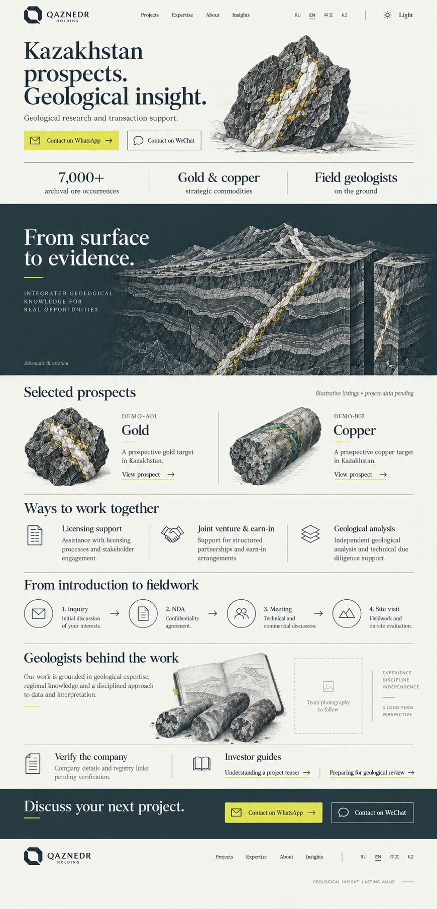
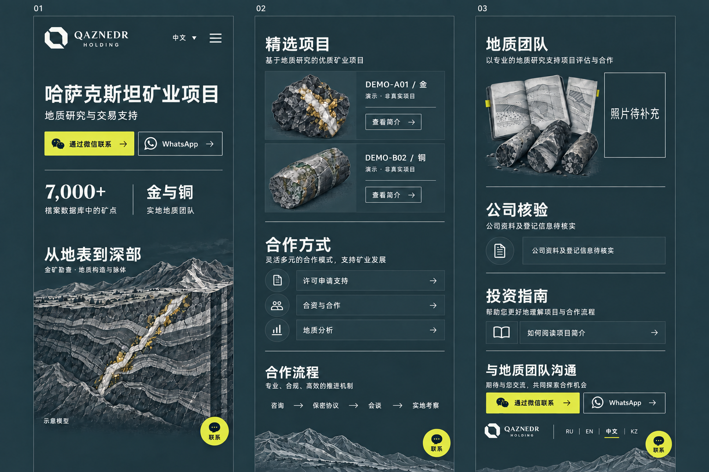
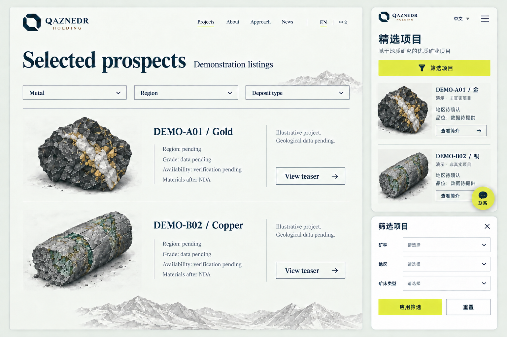
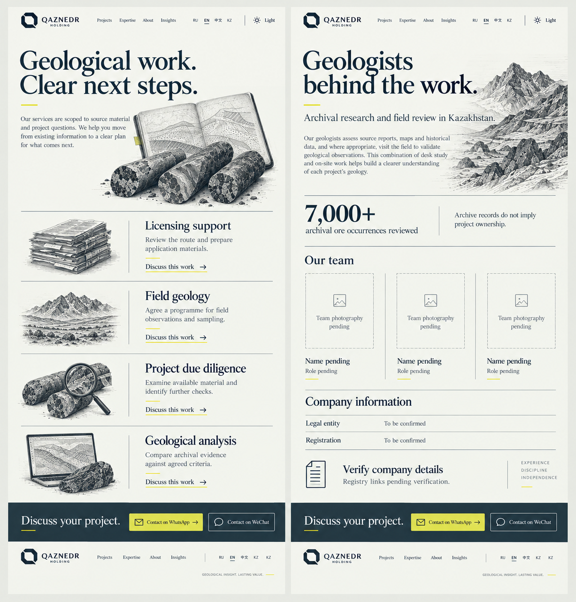
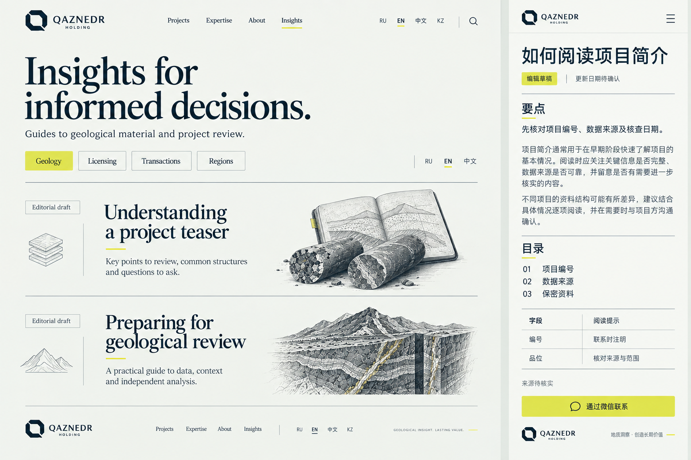

03
Главная
Крупная геологическая сцена, понятный вход в портфель и связь с командой.
Открыть разделA3 «Контур», сланец, мел и серный акцент. Геологическая гравюра объединяет главную, портфель, экспертизу и материалы для инвестора.
Учтены твои решения: сцена перед портфелем; утверждённый состав тизера; на телефоне меню и одна кнопка связи. Новые цветные страницы пока являются предложением.
Точный векторный кандидат A3, брендбук, фирменные носители через ImageGen, демонстрация геологического движения и материалы разработчику.
Открыть новый пакет

03
Крупная геологическая сцена, понятный вход в портфель и связь с командой.
Открыть раздел
04
От выбора направления к открытому тизеру и предметному разговору.
Открыть раздел
05
Состав работы команды, проверяемые сведения и удобные каналы связи.
Открыть раздел
06
Читаемые материалы, таблицы и тематические входы в портфель.
Открыть разделВыбери страницу, язык, тему и ширину. Все формы здесь демонстрационные. Для удобного просмотра всего экрана открой макет отдельной вкладкой.
Размеры 375, 768 и 1440 px; две темы; китайский и английский основной маршрут; сохранение кода участка; меню и фильтры; отсутствие горизонтального переполнения. Подробный объём проверки и известные ограничения — в отчёте.
Утверждения из предыдущих этапов не пересматриваем. Реальные сведения о компании, контактах, проектах и команде заполняются отдельно.